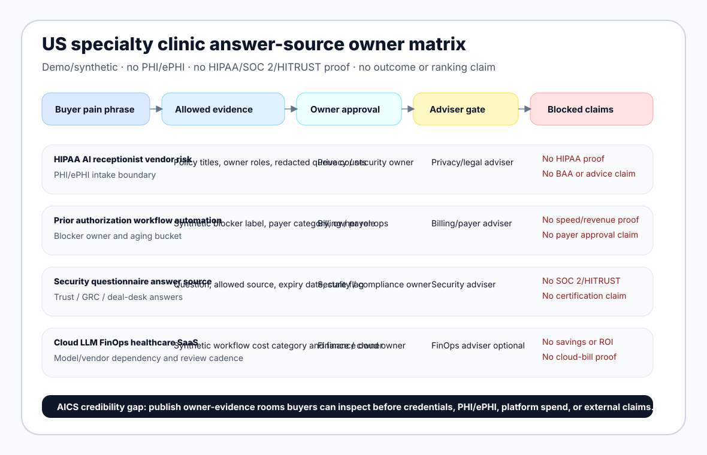

{kind=link}
Truth boundary
This is a synthetic buyer-education answer-source map, not a customer case study and not a completed security questionnaire. It contains no real clinic, physician, patient, PHI/ePHI, payer file, claim, referral, authorization, EHR/PMS export, call recording, cloud bill, production data, testimonial, logo, certification, BAA, HIPAA proof, SOC 2 proof, HITRUST proof, legal advice, privacy advice, security advice, clinical advice, billing/coding advice, payer advice, procurement advice, savings result, ROI result, no-show reduction result, authorization-speed result, denial-reduction result, appointment-growth result, patient-outcome result, ranking result, demand result, lead result, customer result or revenue result. No outreach was sent. No HIPAA compliance proof, SOC 2 proof, HITRUST proof or certification claim is made.
Buyer pain-language researched this run
US specialty clinic security questionnaireHIPAA AI receptionist vendor riskprior authorization workflow automationreferral leakage owner queuepatient access procurement answersPHI/ePHI no-credentials intakecloud LLM FinOps healthcare SaaS
Research status: Direct public checks during this run returned HTTP 200 for Waystar, Luma Health, Phreesia, NexHealth, Notable and the FinOps Foundation Framework. CMS prior-authorization/interoperability and HHS HIPAA URLs sampled from this environment returned 404/403 respectively, so they are not quoted as source-detail here. Search-result pages are not used as ranking proof; AICS still has no verified top-3/top-5 ranking, lead or customer claim for this cluster.
Top competitors and alternatives buyers compare
| Buyer shortlist category | Representative alternatives | What AICS must publish/build to be credible |
|---|---|---|
| Patient engagement / digital front door | Luma Health, Phreesia, NexHealth, Artera, ModMed/Klara, EHR/PMS patient messaging modules and call-center routes. | Evidence that maps missed-call, referral, prior-auth and follow-up questions to accountable owners without PHI/ePHI or unsupported booking/no-show/revenue claims. |
| RCM and prior-authorization workflow | Waystar, Experian Health category, R1/AKASA category, payer portals, clearinghouse workflows and internal revenue-cycle teams. | Referral/prior-auth answer-source rows that show blocker category, allowed redacted source, billing/payer owner, adviser flag and blocked outcome claims. |
| AI receptionist / automation | Voice/SMS AI receptionist vendors, front-desk automation, chatbot tools, CRM workflows and outsourced answering services. | Human-review stop rules for medical, urgent, billing, coverage, consent, identity-verification and policy questions before automation. |
| GRC / trust / security questionnaire | Vanta, Drata, OneTrust, trust centers, questionnaire automation, legal/privacy/security advisers and internal deal desks. | Allowed answer source, owner approval, expiry date, adviser-needed route and external-claim boundary; not fake certification or compliance language. |
| Cloud and AI FinOps | CloudZero, native AWS/Azure/GCP billing tools, FinOps consultants, MSPs and finance dashboards. | Cloud/LLM spend owner rows tied to workflows, model/vendor dependency, buyer promise and review cadence before any savings/ROI statement. |
Use the CSV as a first-pass evidence room
The downloadable map gives AICS a proof artifact buyers can inspect before sharing sensitive material. Replace only with buyer-approved redacted references, counts and owner notes. Keep patient identifiers, PHI/ePHI, credentials, payer files, call recordings, EHR/PMS exports, private security reports and production cloud bills out of the first-pass worksheet unless a separate approved process exists.

Allowed first-pass sources
Redacted queue counts, synthetic examples, policy titles, owner roles, expiry dates, adviser-needed flags and screenshots with identifiers removed.
Blocked first-pass sources
PHI/ePHI, patient identifiers, payer files, claims, EHR/PMS exports, call recordings, credentials, secrets, private SOC 2 reports and unsupported outcomes.
AICS top-5 credibility gap
Publish practical evidence rooms that show owner handoff and claim controls. Buyers already see large platforms; AICS must prove the pre-platform decision layer.
Claim boundaries for external use
Do not turn this into a real client result, HIPAA/SOC 2/HITRUST proof, platform endorsement, legal/privacy/security/clinical/billing/payer advice, ranking claim, procurement approval or savings/revenue/ROI/no-show/reduction/authorization-speed/denial-reduction claim. Qualified buyer-appointed owners and advisers must approve regulated answers.
Safe next step
Run a fixed-scope specialty-clinic evidence review using the synthetic map first, then replace rows only with redacted, approved buyer evidence after the buyer’s privacy/security/procurement owners agree.
Specialty clinic decision memo · Outpatient referral/prior-auth evidence checklist · No-credentials intake policy · More resources